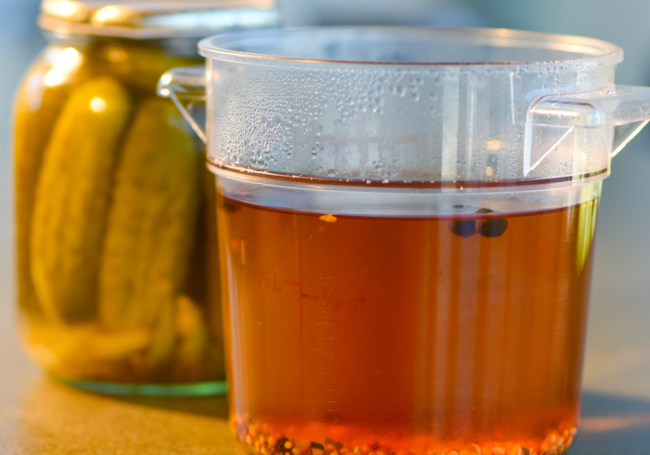

Pickle Brine

Description
Perfect brine for pickling your favorite vegetables! You can store them in the fridge for up to 2 months.
With this recipe you can make 2 jars.
Ingredients
- 1 cup water
- 1 cup vinegar
- 2 tbsp sugar
- 3 tsp salt
- Spices of your choice
Steps
- Stir together all ingredients in a pot and bring it to a boil.
- Remove from heat.
- Pour over your vegetables.
- Cover with a lid.
- Refrigerate when they're at room temperature.